2022 Higher Biology - Paper 1 questions
Source: Scottish Qualifications Authority (SQA) / Qualifications Scotland. This is a StemInteract HTML companion, not an official HTML edition. Selectable text is supplied alongside original page images. Use the images or original PDF for equations, powers, fractions, vector notation, tables and diagrams; text extraction cannot fully preserve mathematical layout.
Jump to a question
PDF page 1
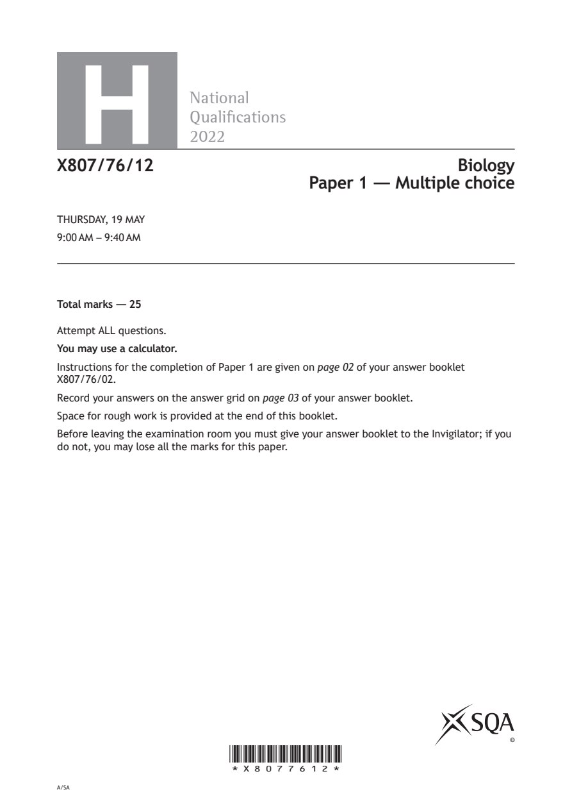
Selectable page text
H
National
Qualications
2022
X807/76/12 Biology
Paper 1 — Multiple choice
THURSDAY, 19 MAY
9:00 AM – 9:40 AM
Total marks — 25
Attempt ALL questions.
You may use a calculator.
Instructions for the completion of Paper 1 are given on page 02 of your answer booklet
X807/76/02.
Record your answers on the answer grid on page 03 of your answer booklet.
Space for rough work is provided at the end of this booklet.
Before leaving the examination room you must give your answer booklet to the Invigilator; if you
do not, you may lose all the marks for this paper.
©
*X8077612*
A/SAPDF page 2
Paper 1, Question 1Paper 1, Question 2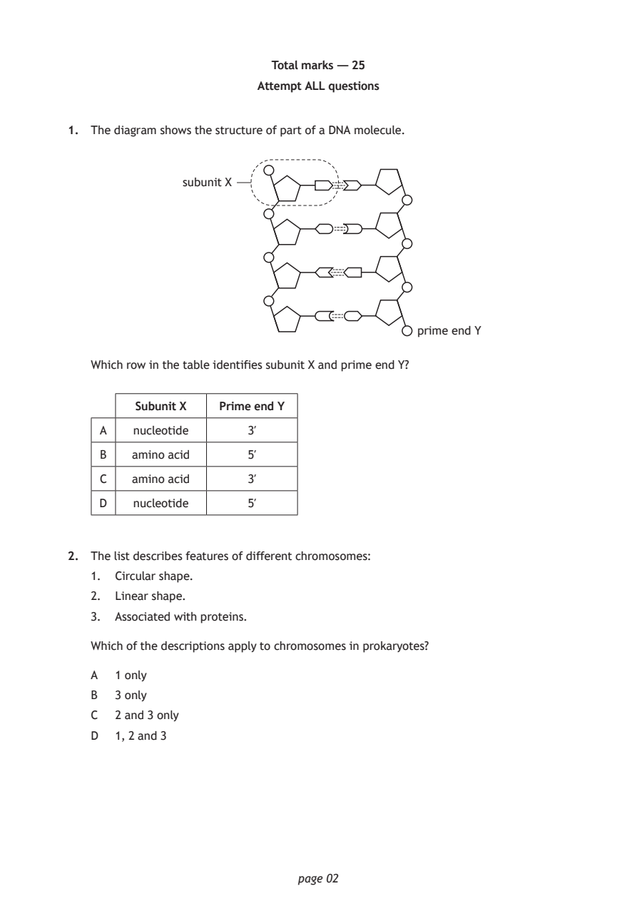
Selectable page text
Total marks — 25
Attempt ALL questions
1. The diagram shows the structure of part of a DNA molecule.
subunit X
prime end Y
Which row in the table identifies subunit X and prime end Y?
Subunit X Prime end Y
A nucleotide 3′
B amino acid 5′
C amino acid 3′
D nucleotide 5′
2. The list describes features of different chromosomes:
1. Circular shape.
2. Linear shape.
3. Associated with proteins.
Which of the descriptions apply to chromosomes in prokaryotes?
A 1 only
B 3 only
C 2 and 3 only
D 1, 2 and 3
page 02PDF page 3
Paper 1, Question 3Paper 1, Question 4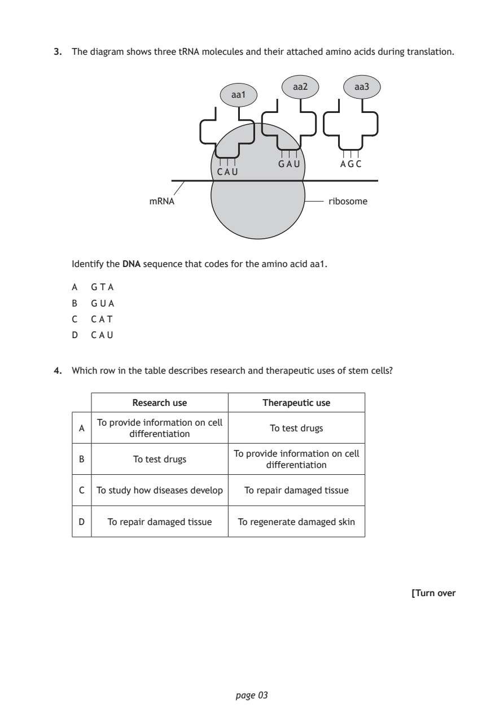
Selectable page text
3. The diagram shows three tRNA molecules and their attached amino acids during translation.
aa2 aa3
aa1
GAU AGC
CAU
mRNA ribosome
Identify the DNA sequence that codes for the amino acid aa1.
A G T A
B G U A
C C A T
D C A U
4. Which row in the table describes research and therapeutic uses of stem cells?
Research use Therapeutic use
To provide information on cell
A To test drugs
differentiation
To provide information on cell
B To test drugs
differentiation
C To study how diseases develop To repair damaged tissue
D To repair damaged tissue To regenerate damaged skin
[Turn over
page 03PDF page 4
Paper 1, Question 5Paper 1, Question 6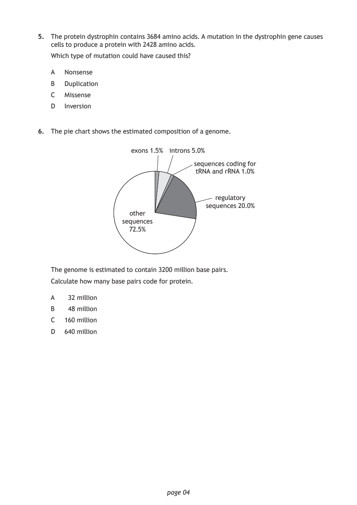
Selectable page text
5. The protein dystrophin contains 3684 amino acids. A mutation in the dystrophin gene causes
cells to produce a protein with 2428 amino acids.
Which type of mutation could have caused this?
A Nonsense
B Duplication
C Missense
D Inversion
6. The pie chart shows the estimated composition of a genome.
exons 1.5% introns 5.0%
sequences coding for
tRNA and rRNA 1.0%
regulatory
sequences 20.0%
other
sequences
72.5%
The genome is estimated to contain 3200 million base pairs.
Calculate how many base pairs code for protein.
A 32 million
B 48 million
C 160 million
D 640 million
page 04PDF page 5
Paper 1, Question 7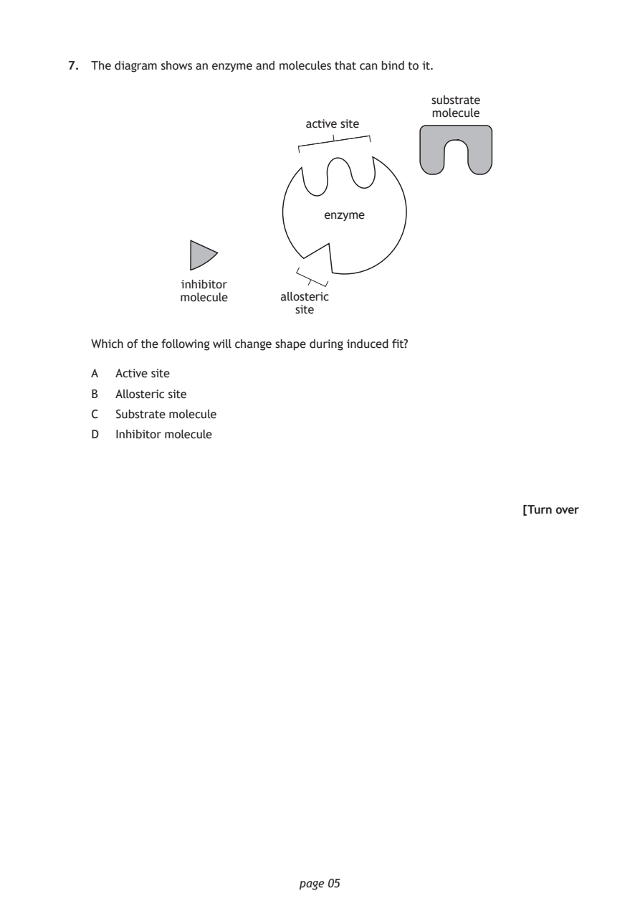
Selectable page text
7. The diagram shows an enzyme and molecules that can bind to it.
substrate
molecule
active site
enzyme
inhibitor
molecule allosteric
site
Which of the following will change shape during induced fit?
A Active site
B Allosteric site
C Substrate molecule
D Inhibitor molecule
[Turn over
page 05PDF page 6
Paper 1, Question 8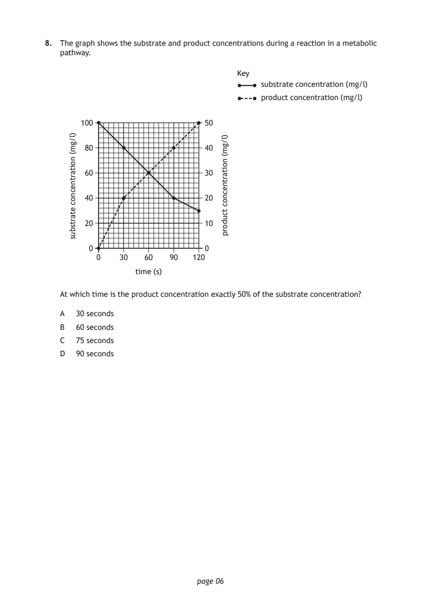
Selectable page text
8. The graph shows the substrate and product concentrations during a reaction in a metabolic
pathway.
50
40
30
20
10
0
0 30 60 90 120
time (s)
page 06
)l/gm(
noitartnecnoc
etartsbus
)l/gm(
noitartnecnoc
tcudorp
Key
substrate concentration (mg/l)
product concentration (mg/l)
100
80
60
40
20
0
At which time is the product concentration exactly 50% of the substrate concentration?
A 30 seconds
B 60 seconds
C 75 seconds
D 90 secondsPDF page 7
Paper 1, Question 9Paper 1, Question 10Paper 1, Question 11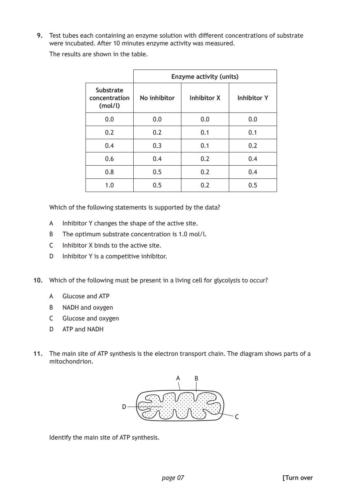
Selectable page text
9. Test tubes each containing an enzyme solution with different concentrations of substrate
were incubated. After 10 minutes enzyme activity was measured.
The results are shown in the table.
Enzyme activity (units)
Substrate
concentration No inhibitor Inhibitor X Inhibitor Y
(mol/l)
0.0 0.0 0.0 0.0
0.2 0.2 0.1 0.1
0.4 0.3 0.1 0.2
0.6 0.4 0.2 0.4
0.8 0.5 0.2 0.4
1.0 0.5 0.2 0.5
Which of the following statements is supported by the data?
A Inhibitor Y changes the shape of the active site.
B The optimum substrate concentration is 1.0 mol/l.
C Inhibitor X binds to the active site.
D Inhibitor Y is a competitive inhibitor.
10. Which of the following must be present in a living cell for glycolysis to occur?
A Glucose and ATP
B NADH and oxygen
C Glucose and oxygen
D ATP and NADH
11. The main site of ATP synthesis is the electron transport chain. The diagram shows parts of a
mitochondrion.
A B
D
C
Identify the main site of ATP synthesis.
page 07 [Turn overPDF page 8
Paper 1, Question 12Paper 1, Question 13Paper 1, Question 14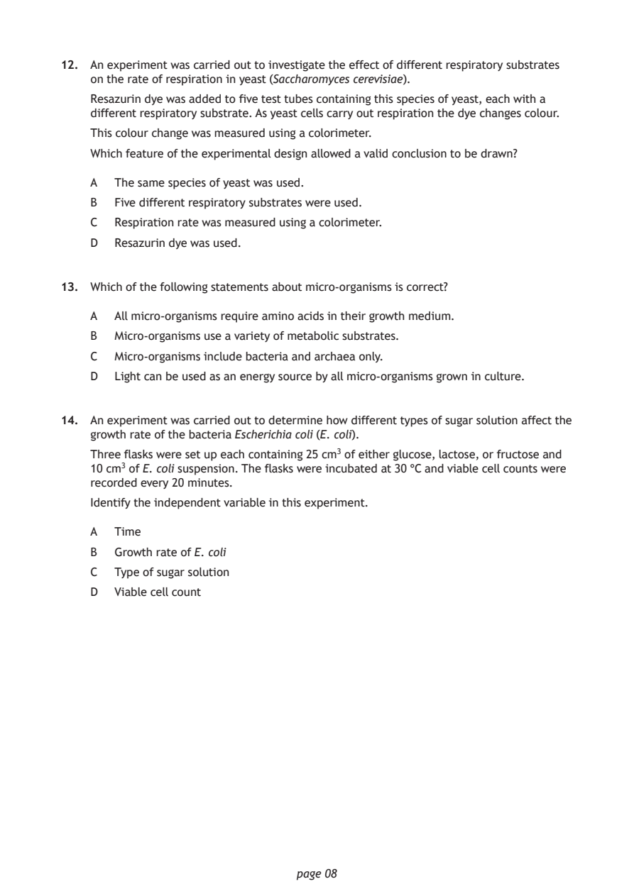
Selectable page text
12. An experiment was carried out to investigate the effect of different respiratory substrates
on the rate of respiration in yeast (Saccharomyces cerevisiae).
Resazurin dye was added to five test tubes containing this species of yeast, each with a
different respiratory substrate. As yeast cells carry out respiration the dye changes colour.
This colour change was measured using a colorimeter.
Which feature of the experimental design allowed a valid conclusion to be drawn?
A The same species of yeast was used.
B Five different respiratory substrates were used.
C Respiration rate was measured using a colorimeter.
D Resazurin dye was used.
13. Which of the following statements about micro-organisms is correct?
A All micro-organisms require amino acids in their growth medium.
B Micro-organisms use a variety of metabolic substrates.
C Micro-organisms include bacteria and archaea only.
D Light can be used as an energy source by all micro-organisms grown in culture.
14. An experiment was carried out to determine how different types of sugar solution affect the
growth rate of the bacteria Escherichia coli (E. coli).
Three flasks were set up each containing 25 cm³ of either glucose, lactose, or fructose and
10 cm³ of E. coli suspension. The flasks were incubated at 30 °C and viable cell counts were
recorded every 20 minutes.
Identify the independent variable in this experiment.
A Time
B Growth rate of E. coli
C Type of sugar solution
D Viable cell count
page 08PDF page 9
Paper 1, Question 15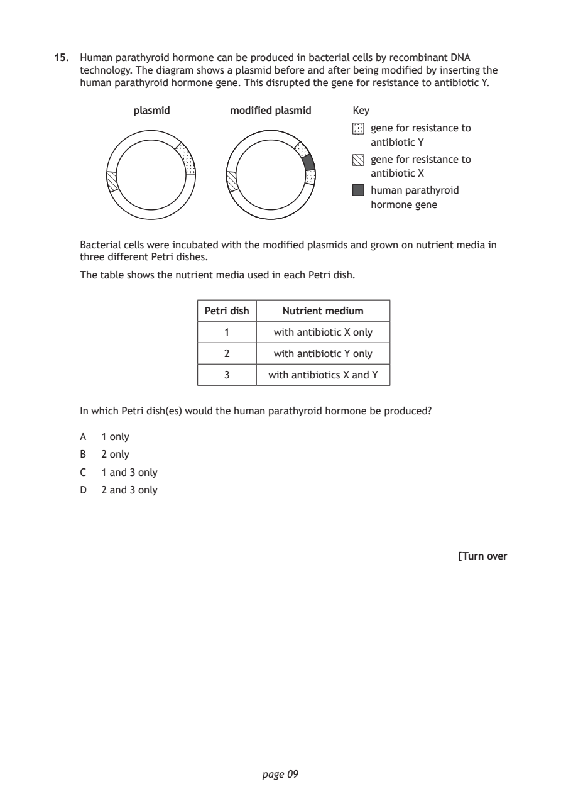
Selectable page text
15. Human parathyroid hormone can be produced in bacterial cells by recombinant DNA
technology. The diagram shows a plasmid before and after being modified by inserting the
human parathyroid hormone gene. This disrupted the gene for resistance to antibiotic Y.
plasmid modified plasmid Key
gene for resistance to
antibiotic Y
gene for resistance to
antibiotic X
human parathyroid
hormone gene
Bacterial cells were incubated with the modified plasmids and grown on nutrient media in
three different Petri dishes.
The table shows the nutrient media used in each Petri dish.
Petri dish Nutrient medium
1 with antibiotic X only
2 with antibiotic Y only
3 with antibiotics X and Y
In which Petri dish(es) would the human parathyroid hormone be produced?
A 1 only
B 2 only
C 1 and 3 only
D 2 and 3 only
[Turn over
page 09PDF page 10
Paper 1, Question 16Paper 1, Question 17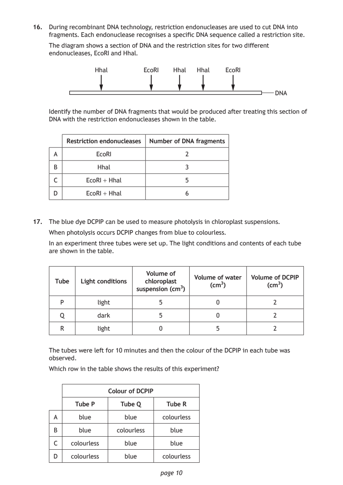
Selectable page text
16. During recombinant DNA technology, restriction endonucleases are used to cut DNA into
fragments. Each endonuclease recognises a specific DNA sequence called a restriction site.
The diagram shows a section of DNA and the restriction sites for two different
endonucleases, EcoRI and Hhal.
Hhal EcoRI Hhal Hhal EcoRI
DNA
Identify the number of DNA fragments that would be produced after treating this section of
DNA with the restriction endonucleases shown in the table.
Restriction endonucleases Number of DNA fragments
A EcoRI 2
B Hhal 3
C EcoRI + Hhal 5
D EcoRI + Hhal 6
17. The blue dye DCPIP can be used to measure photolysis in chloroplast suspensions.
When photolysis occurs DCPIP changes from blue to colourless.
In an experiment three tubes were set up. The light conditions and contents of each tube
are shown in the table.
Volume of
Volume of water Volume of DCPIP
Tube Light conditions chloroplast
(cm³) (cm³)
suspension (cm³)
P light 5 0 2
Q dark 5 0 2
R light 0 5 2
The tubes were left for 10 minutes and then the colour of the DCPIP in each tube was
observed.
Which row in the table shows the results of this experiment?
Colour of DCPIP
Tube P Tube Q Tube R
A blue blue colourless
B blue colourless blue
C colourless blue blue
D colourless blue colourless
page 10PDF page 11
Paper 1, Question 18Paper 1, Question 19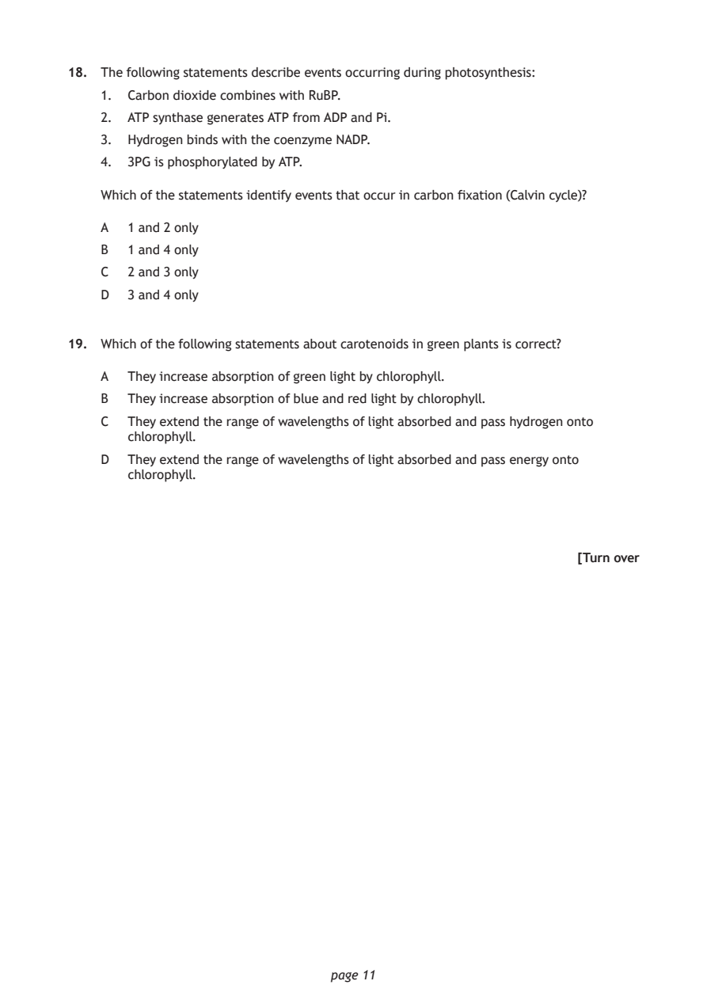
Selectable page text
18. The following statements describe events occurring during photosynthesis:
1. Carbon dioxide combines with RuBP.
2. ATP synthase generates ATP from ADP and Pi.
3. Hydrogen binds with the coenzyme NADP.
4. 3PG is phosphorylated by ATP.
Which of the statements identify events that occur in carbon fixation (Calvin cycle)?
A 1 and 2 only
B 1 and 4 only
C 2 and 3 only
D 3 and 4 only
19. Which of the following statements about carotenoids in green plants is correct?
A They increase absorption of green light by chlorophyll.
B They increase absorption of blue and red light by chlorophyll.
C They extend the range of wavelengths of light absorbed and pass hydrogen onto
chlorophyll.
D They extend the range of wavelengths of light absorbed and pass energy onto
chlorophyll.
[Turn over
page 11PDF page 12
Paper 1, Question 20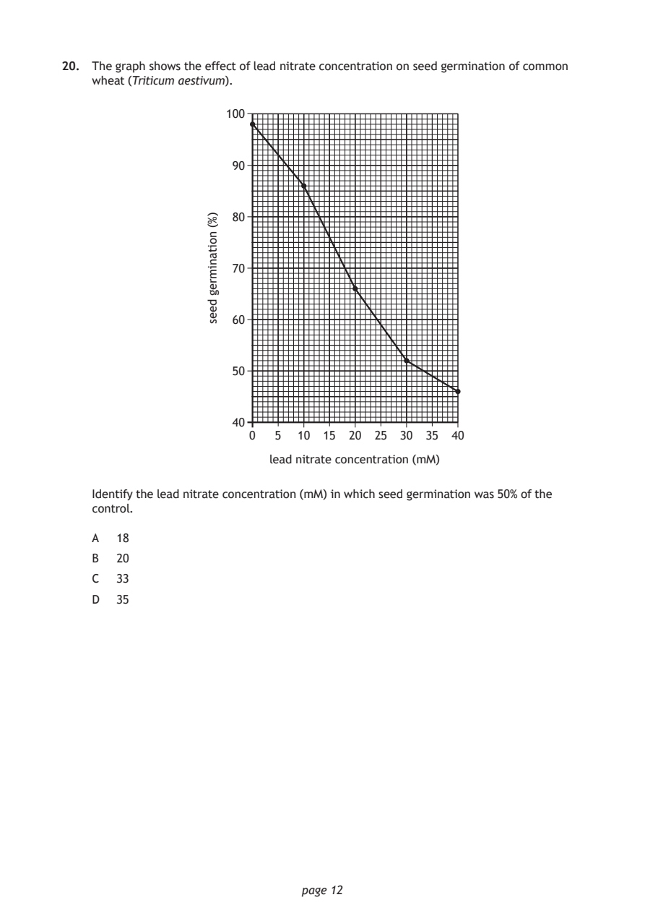
Selectable page text
20. The graph shows the effect of lead nitrate concentration on seed germination of common
wheat (Triticum aestivum).
0 5 10 15 20 25 30 35 40
page 12
)%(
noitanimreg
dees
100
90
80
70
60
50
40
lead nitrate concentration (mM)
Identify the lead nitrate concentration (mM) in which seed germination was 50% of the
control.
A 18
B 20
C 33
D 35PDF page 13
Paper 1, Question 21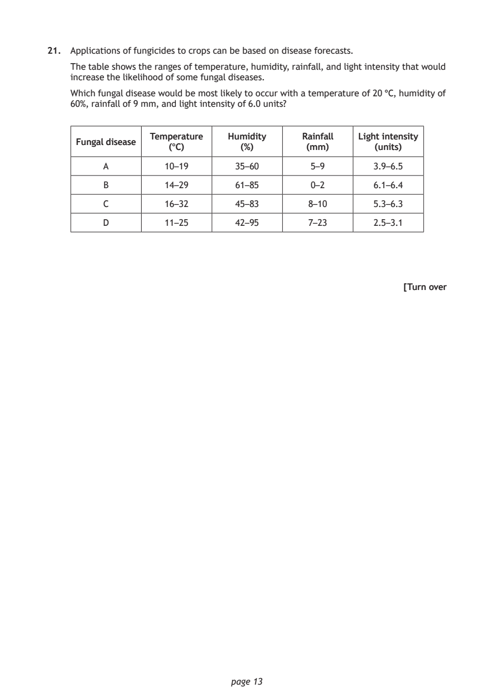
Selectable page text
21. Applications of fungicides to crops can be based on disease forecasts.
The table shows the ranges of temperature, humidity, rainfall, and light intensity that would
increase the likelihood of some fungal diseases.
Which fungal disease would be most likely to occur with a temperature of 20 °C, humidity of
60%, rainfall of 9 mm, and light intensity of 6.0 units?
Temperature Humidity Rainfall Light intensity
Fungal disease
(°C) (%) (mm) (units)
A 10–19 35–60 5–9 3.9–6.5
B 14–29 61–85 0–2 6.1–6.4
C 16–32 45–83 8–10 5.3–6.3
D 11–25 42–95 7–23 2.5–3.1
[Turn over
page 13PDF page 14
Paper 1, Question 22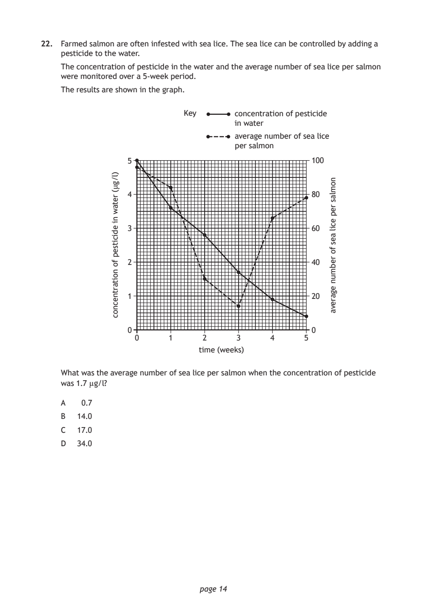
Selectable page text
22. Farmed salmon are often infested with sea lice. The sea lice can be controlled by adding a
pesticide to the water.
The concentration of pesticide in the water and the average number of sea lice per salmon
were monitored over a 5-week period.
The results are shown in the graph.
concentration of pesticide
in water
average number of sea lice
per salmon
0 1 2 3 4 5
page 14
)l/gμ(
retaw
ni
edicitsep
fo
noitartnecnoc
nomlas
rep
ecil
aes
fo
rebmun
egareva
Key
5 100
4 80
3 60
2 40
1 20
0 0
time (weeks)
What was the average number of sea lice per salmon when the concentration of pesticide
was 1.7 µg/l?
A 0.7
B 14.0
C 17.0
D 34.0PDF page 15
Paper 1, Question 23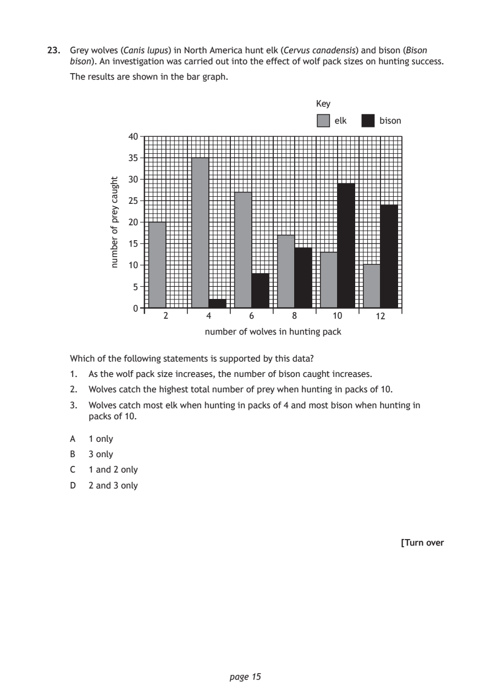
Selectable page text
23. Grey wolves (Canis lupus) in North America hunt elk (Cervus canadensis) and bison (Bison
bison). An investigation was carried out into the effect of wolf pack sizes on hunting success.
The results are shown in the bar graph.
Key
elk bison
2 4 6 8 10 12
number of wolves in hunting pack
page 15
thguac
yerp
fo
rebmun
40
35
30
25
20
15
10
5
0
Which of the following statements is supported by this data?
1. As the wolf pack size increases, the number of bison caught increases.
2. Wolves catch the highest total number of prey when hunting in packs of 10.
3. Wolves catch most elk when hunting in packs of 4 and most bison when hunting in
packs of 10.
A 1 only
B 3 only
C 1 and 2 only
D 2 and 3 only
[Turn overPDF page 16
Paper 1, Question 24Paper 1, Question 25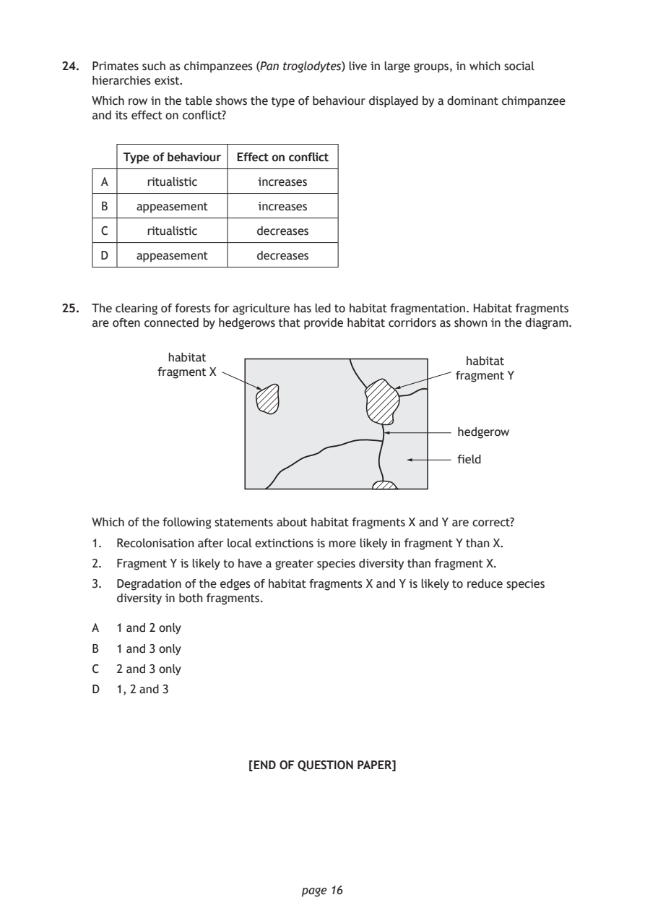
Selectable page text
24. Primates such as chimpanzees (Pan troglodytes) live in large groups, in which social
hierarchies exist.
Which row in the table shows the type of behaviour displayed by a dominant chimpanzee
and its effect on conflict?
Type of behaviour Effect on conflict
A ritualistic increases
B appeasement increases
C ritualistic decreases
D appeasement decreases
25. The clearing of forests for agriculture has led to habitat fragmentation. Habitat fragments
are often connected by hedgerows that provide habitat corridors as shown in the diagram.
habitat
habitat
fragment X
fragment Y
hedgerow
field
Which of the following statements about habitat fragments X and Y are correct?
1. Recolonisation after local extinctions is more likely in fragment Y than X.
2. Fragment Y is likely to have a greater species diversity than fragment X.
3. Degradation of the edges of habitat fragments X and Y is likely to reduce species
diversity in both fragments.
A 1 and 2 only
B 1 and 3 only
C 2 and 3 only
D 1, 2 and 3
[END OF QUESTION PAPER]
page 16PDF page 17

Selectable page text
SPACE FOR ROUGH WORK
page 17PDF page 18

Selectable page text
SPACE FOR ROUGH WORK
page 18PDF page 19

Selectable page text
[BLANK PAGE]
DO NOT WRITE ON THIS PAGE
page 19PDF page 20
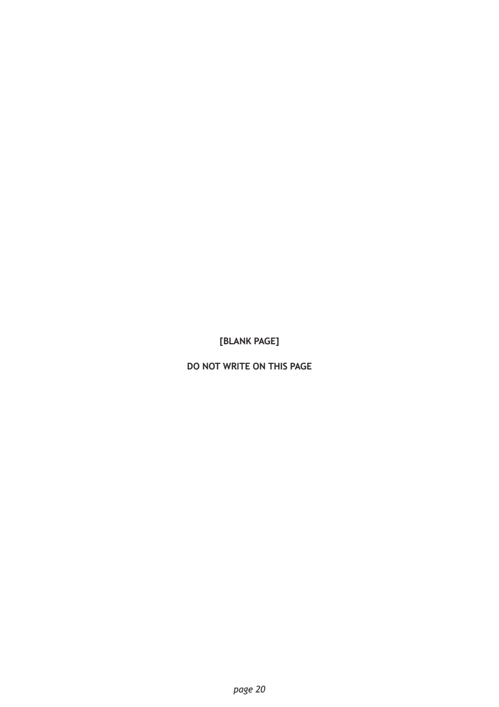
Selectable page text
[BLANK PAGE]
DO NOT WRITE ON THIS PAGE
page 20